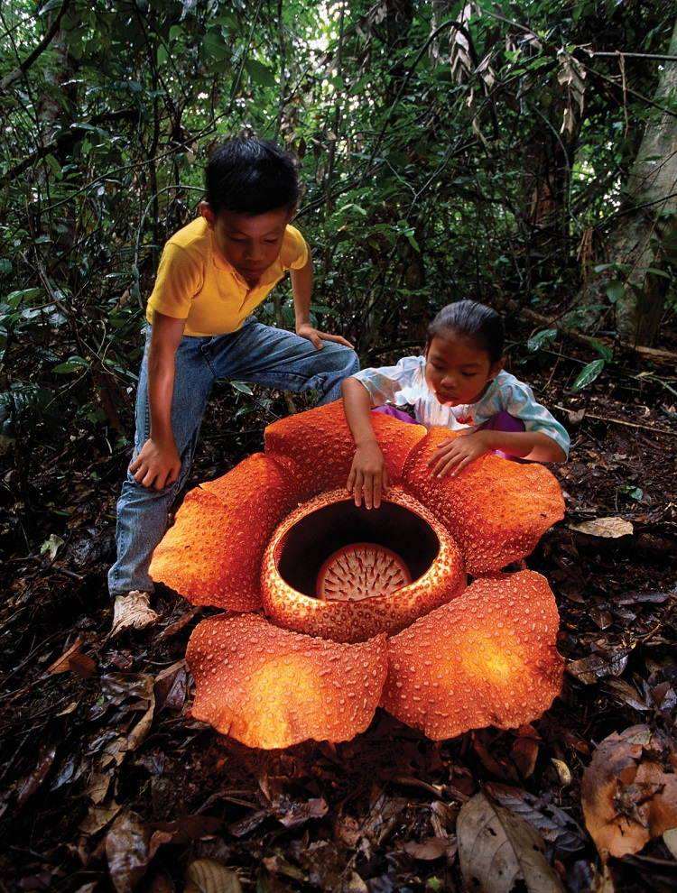

Discover the Indonesia Rainforest: Tropical Climate and Biodiversity
The Malaysia rainforest stands as one of the world's most captivating natural wonders, boasting an unparalleled richness in biodiversity. This tropical paradise is home to a stunning array of flora and fauna, making it a hotspot for conservation efforts and ecological research. With its lush canopies, diverse forest types, and unique ecosystems ranging from mangrove forests to wildlife sanctuaries, Malaysia's rainforests offer a glimpse into the heart of nature's most intricate designs.
Me, you, and the endless blue
Visitors to the Malaysia rainforest have the chance to explore a world teeming with life, where endemic species thrive and new discoveries await at every turn. From the vibrant coral reefs of its marine ecosystems to the towering trees of its tropical rainforests, this natural wonder showcases the incredible variety of life that flourishes in tropical climates. As one of the most biodiverse tropical countries, Malaysia's national parks and protected areas play a crucial role in safeguarding these precious habitats for future generations to marvel at and study.
